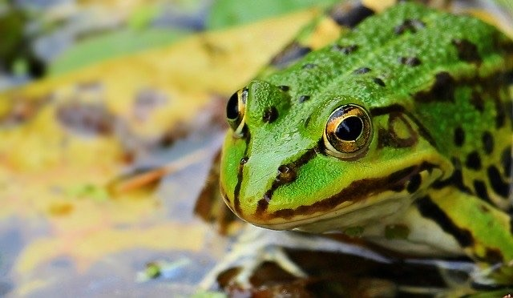

Do you like things that slither, are slimy, or have scales? Then we have
something for you. Take a look at our adoptable reptiles below.
1 / 18
This is a young Anole named Anna. Anoles are similar to
chamilions as they can sometimes change their appearance.
2 / 18
This is another young Anole; his name is Raptor. If you
are a beginner in the reptile department, I would suggest something small,
like an Anole or a snake.
3 / 18
Slitherin is a Ball Python and would be best for an owner
that has a little bit experience with snakes. Remember these snakes get rather
large!
4 / 18
This Ball Python's name is Fluffy. Fluffy is comfortable
with being handled and loves live food rather than frozen options.
5 / 18
This bearded dragons name is Merlin. Merlin loves lounging
under his heat lamp but doesn't like being snuggled very much.
6 / 18
These are baby bearded dragons whom have not had names
given to them yet. The names will be up to their new owners!!.
7 / 18
Meet Uluru, a regal bearded dragon just begging you to
take him home to a fance new habitat.
8 / 18
This black snake is often called a rat snake as well; both
names are correct. His name is Khalifa; obviously named after the rapper
that created the "Black and Yellow" song.
9 / 18
Golum is a cute little baby box turtle. These turtles are
very easy to take care of, they just need a clean habitat and fresh fruits
and vegetables from your own refridgerator!.
10 / 18
Corn snakes often get confused with the venemous coral
snake. Pumkin Pie would make you a very nice and clean pet. Snakes are
often looked over as pets but in reality they are one of the easiest animal
to take care of.
11 / 18
Pumpkin is a beautiful shade of orange all over. He is a
slightly older snake so he is mostly out of the danger zone of dying due
to lack of eating This is one beautiful snake!.
12 / 18
As corn snakes get older they tend to change color. This
corn snake is named Blended due to his amazing ability to blend in to
his surroundings.
13 / 18
Greenie the garden snake loves to eat stray mice around
your yard. You can find them all over but they make wonderful indoor
pets as well.
14 / 18
Gary the gecko may have been in some tv commercials at
some point but we will never know! Gary is quick so if you adopt him, be
prepared to chase after him if he gets away from you!.
15 / 18
Izzy the iguana is very frisky. Only an experienced
reptile handler should be interested in adopting him. If you think you are
ready for such a pet; come one down, and admire Izzy!
16 / 18
Ribbit would be a fun pet to admire. They are generally
easy to take care of. They eat live crickets and other bugs which we also
sell here at Webb's Wags & Wiggles Pet Shop.
17 / 18
This is Kermit. He really likes crickets and flies. He
won't grow very big, so don't lose him once he get comfortable in his tank.
He may bury himself to further camouflage himself.
18 / 18

Meet Bud! Bus is very wise because he stays next to the
water to look for his soulmate and he knows that is where the best feeding
grounds are. If you decide to adopt Bud, make sure to have a rocky area
above the water so he can have a space to go when he's not feeling like
being wet.